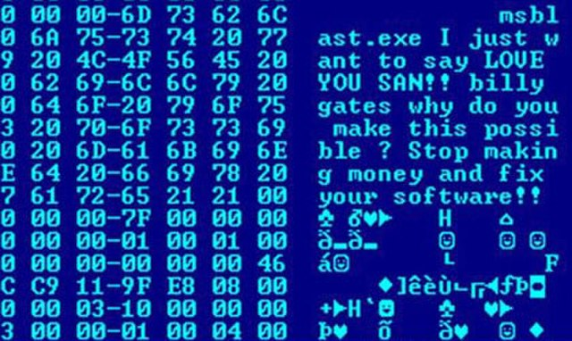
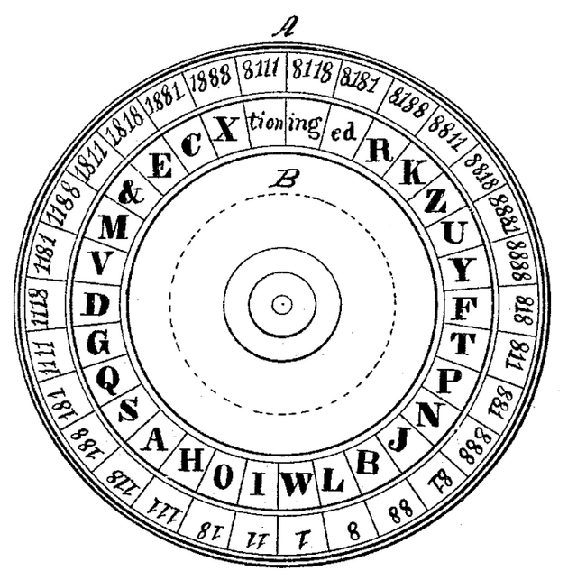

Cybersecurity

Malware

Cryptography
Access Control
Cybersecurity is the study of the protection of computer systems from malicious attacks or data breaches.
It has many sub-categories, including the three displayed above. Click on the links to learn more about each subject!